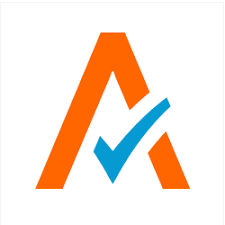
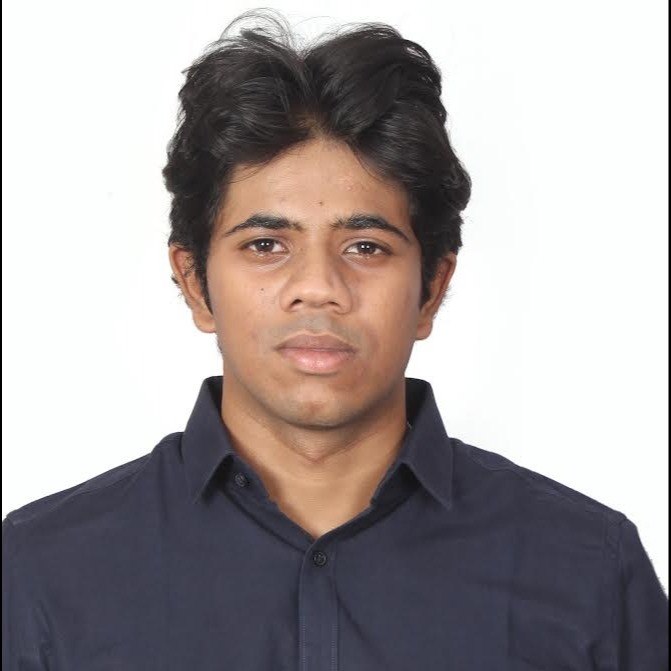
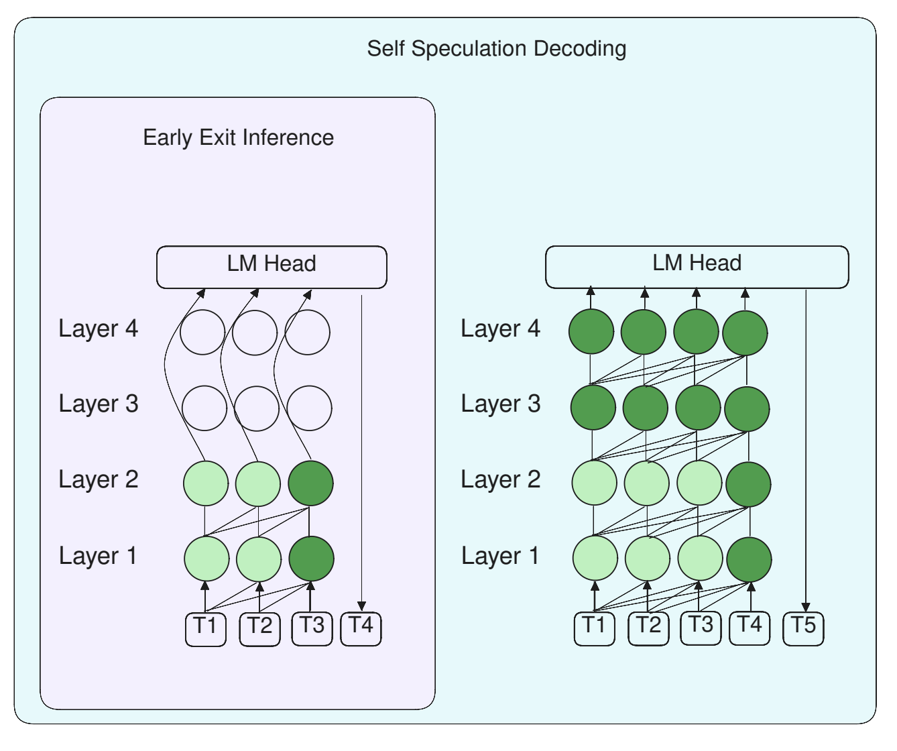
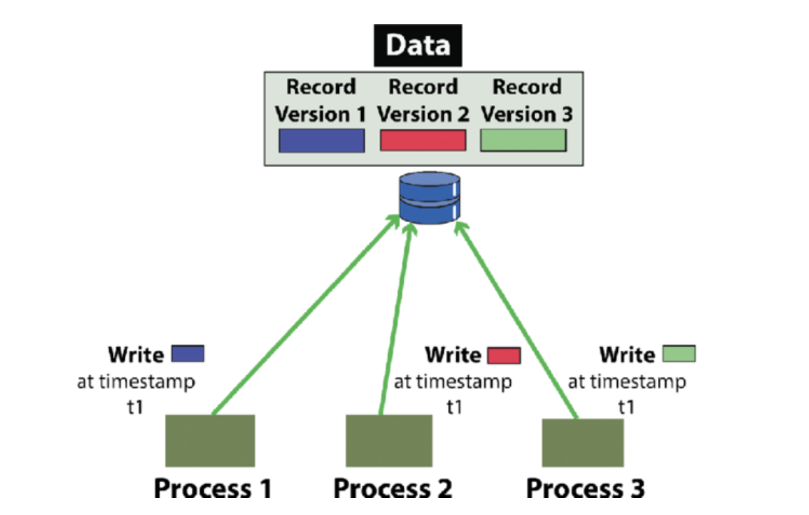
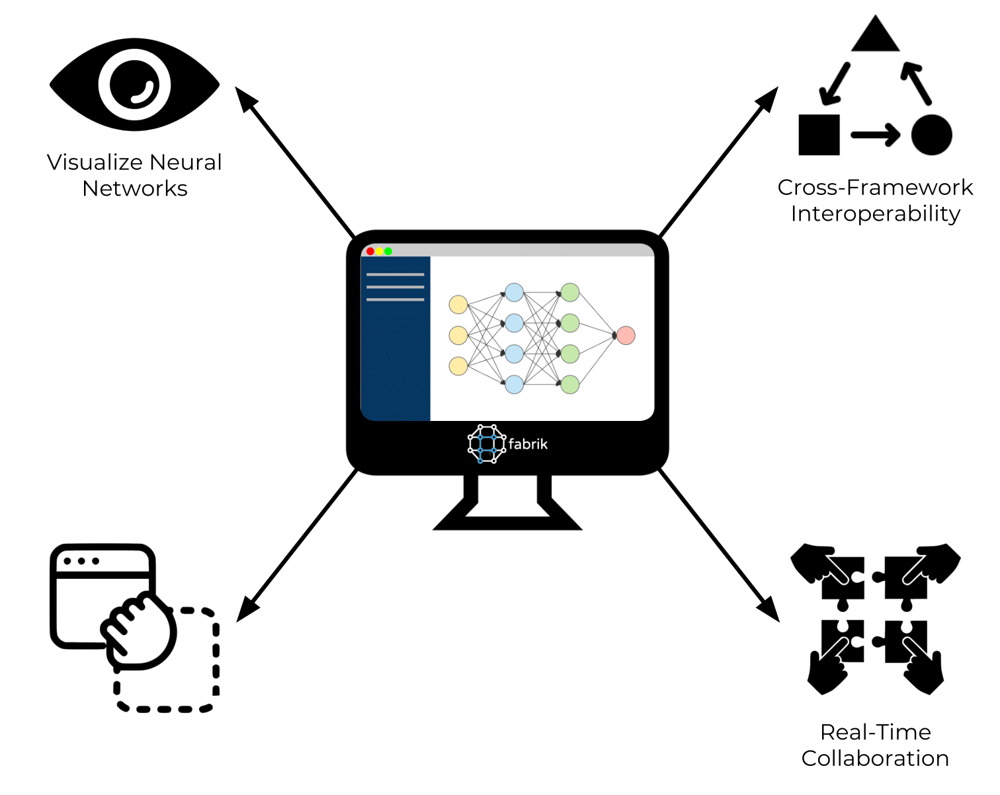
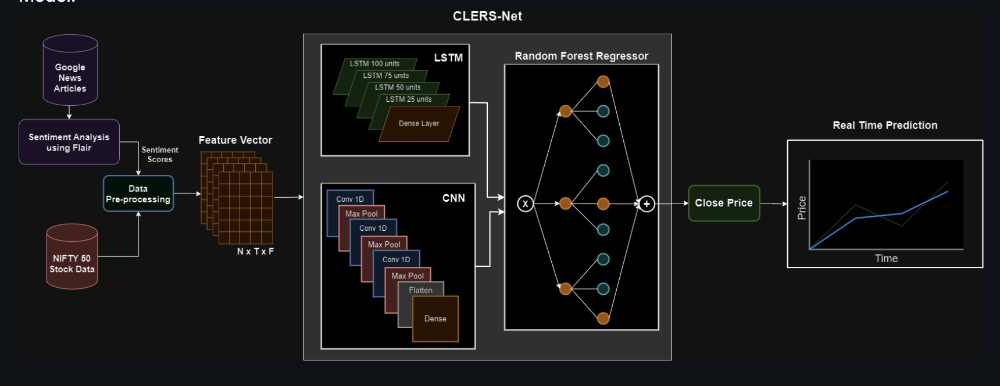
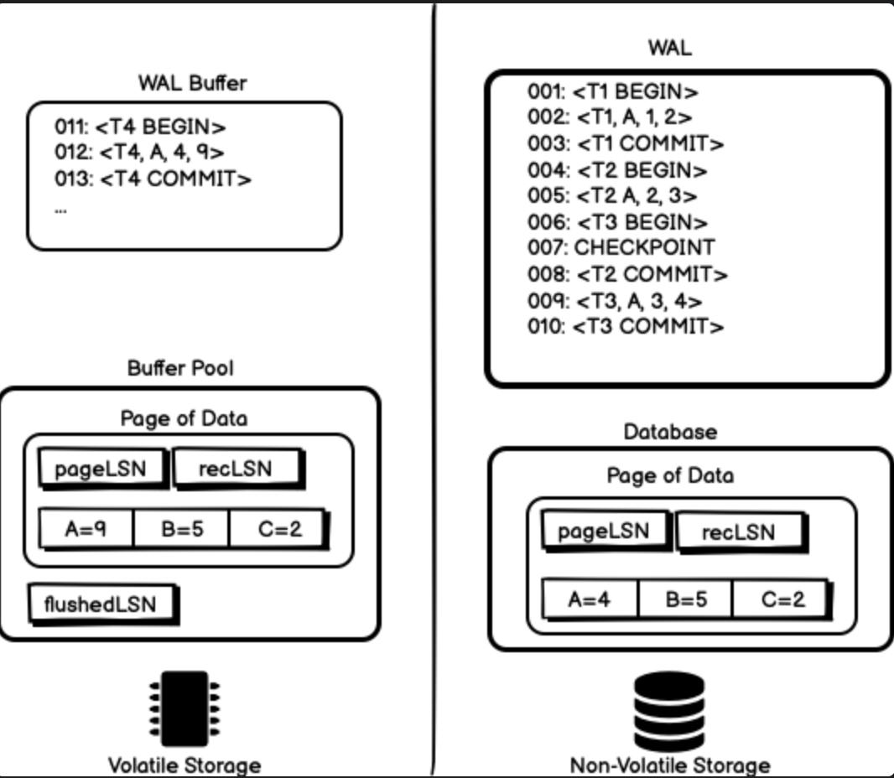

2018-2022
2024-current

2022-2024
Fall 2021
GRA
2024-current
2024-current
Summer 2025
I am a Graduate Research Assistant at Georgia Institute of Technology, where I work with Prof. Benoit Montreuil on transportation logistics optimization and supply chain systems. My research focuses on stochastic durable routing algorithms and interactive visualization platforms that enhance freight transportation efficiency across metropolitan corridors.
During the summer of 2025, I served as a Data Science Intern at Pulllogic Inc in Atlanta. I worked on building agentic workflows to scrape product data from hundreds of manufacturer websites and helped redesign client dashboards into configurable applications for enterprise partners such as HD Supply.
Prior to Georgia Tech, I served as a Software Development Engineer II at Avalara, a leading tax compliance software provider. There, I worked with technologies including C#, .NET Core, MongoDB, and AWS cloud services. One of my key contributions was the development of "Extractor Studio," an ETL pipeline solution designed to streamline data transformation for enterprise clients across various e-commerce and marketplace platforms.
Currently pursuing my Master's in Computer Science at Georgia Tech, I'm expanding my expertise in Deep Learning, Advanced Database Systems, and Data & Visual Analytics. I'm particularly interested in how thoughtfully designed technological systems can transform industries and create meaningful impact.
Outside of my academic and professional pursuits, I enjoy playing cricket, reading books, watching movies, and following college football.


Large Language Model (LLM) inference optimization research investigating advanced techniques like layer collapse, adaptive depth selection, and neural network pruning to dynamically modulate transformer architectural complexity, minimizing computational overhead while preserving model performance integrity.

Multi-Version Concurrency Control (MVCC) architecture in BuzzDB optimizes transactional throughput by leveraging versioned tuple storage and intelligent timestamp-based visibility management, eliminating concurrency bottlenecks inherent in traditional two-phase locking protocols.

A continual learning framework using image encoders (ViT, CLIP) and language encoders (BERT) to generate multi-modal embeddings for skin cancer classification and model interpretability.

CLERS-Net is a deep learning ensemble model integrating CNN, LSTM, and Random Forest Regressor with sentiment analysis using the Flair NLP model to predict real-time stock prices for NIFTY-50 companies based on historical stock data and news sentiments.

A book recommendation engine built using Matrix Factorization and Neural Collaborative Filtering, processing over 2M records to generate user-centric suggestions with an interactive visualization interface.

ARIES database recovery architecture with Write-Ahead Logging (WAL) protocol and fuzzy checkpointing mechanisms, incorporating three-phase recovery (analysis, redo, undo) to ensure transaction durability and atomicity while optimizing buffer management performance.

An efficient external sorting algorithm that processed large datasets exceeding available memory, implementing a two-phase merge sort approach with optimized file I/O and priority queue-based merging that maintained O(n log k) complexity while minimizing disk access patterns.

A dynamic, scrolly-telling interface with a martini-glass narrative, guiding parents across the USA through factors influencing their children's journey to becoming inventors.

A two-stage model with a Random Forest Classifier for flight delay prediction and a Random Forest Regressor for delay estimation, integrating structured flight and JSON weather data while applying SMOTE and Random Undersampling for class imbalance correction.

A deep learning-based computer vision model for automated adjudication of delivery legality from bowler action images, leveraging a custom dataset with strategic augmentation to mitigate right-arm bowler bias and enhance generalization.

A multivariate regression ensemble combining SVM, XGBoost, and Lasso regressors to forecast IPL cricket score trajectories through feature engineering of historical match variables and real-time predictive visualization.

Implemented generalized Voronoi diagrams with convex decomposition to construct sparse, obstacle-avoiding path networks for real-time game navigation.